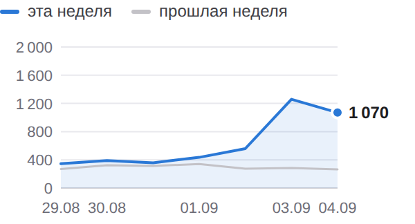
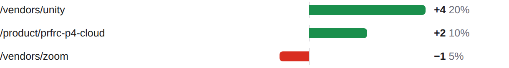
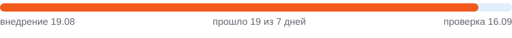

BIZSoft Growth Intelligence Daily Search, Demand & Experiment Control · 07.09.2026
Яндекс по 04.09 · Google по 05.09 · Метрика по 06.09 · спрос 06.09 | | ! | ПОИСК — смешанная | | | ✓ | ДАННЫЕ — сверено | | | ! | ТЕХНИКА — YELLOW · 100 | | | · | ОТ ВАС — 2 предложения | |
| От вас: срочного нет, на вашем столе 2 предложения • эксперименты: ближайшее предложение решения — 13.09 (PAGES-EXP-001); варианты и вероятный исход — в «Контроле эксперимента» • рост без бюджета: 3 кластера с показами без переходов (оплата coreldraw для россиян, оплата artlist юридическим лицом, оплата motion array юридическим лицом) ждут переписанных сниппетов — «Где ближе всего рост» Развёрнутые постановки задач — в разделе «Управленческие воздействия» внизу письма; решения принимаете вы, система без команды ничего не меняет. |
| Показатели Видимость в Яндексе 4 415 показов за неделю ▲ +2343 +113,1%  По дням: эта неделя 4 415, прошлая 2 072. На первой странице 1188 из 1479 запросов выборки. CTR 0,72% по всему сайту. 29.08–04.09 · Яндекс.Вебмастер, весь сайт, дневные ряды · достоверность: достаточная |
Видимость в Google 80 показов за неделю ▲ +49 +158,1% Переходов из Google пока нет. 29.08–04.09 · Google Search Console, весь сайт, дневные ряды · достоверность: достаточная |
Органический трафик 17 визитов за неделю ▲ +2 Визиты из поиска: весь сайт, все поисковые системы. 31.08–06.09 · Яндекс.Метрика, весь сайт, дневные ряды · достоверность: низкая, малые числа |
Обращения 0 заявок за сутки Заявки воронки сайта: компания, состав запроса и канал каждой — в блоке «Заявки за сутки». 06.09 · воронка сайта (Directus) · достоверность: полный подсчёт, малые числа |
| Сигналы дня Показы в Google за неделю 38 → 83 (+45)Страницы сайта стали показываться чаще. достоверность: достаточная Страницы в поиске Яндекса 663 → 663 (без изменений)Объём проиндексированного сайта не изменился. достоверность: достаточная Запросы выборки на первой странице 1 228 → 1 188 (−40)Внутри выборки стало меньше запросов на первой странице. достоверность: достаточная | Заявки за сутки канал определяется по визитам Метрики (ym:s:clientID); при отсутствии визитов — по метке источника в браузере, и тогда выдача поисковика неотличима от его сервисов За сутки заявок не поступило; за 7 дней — 3 заявки. | Реклама — Яндекс.Директ расход в деньгах кабинета (без НДС); заявки — цели Метрики (отправка заявки, скачивание КП), контакты — клики по телефону/почте и мессенджер; с CRM не сверяется Кампания Директа, данные за 06.09: за день 0 ₽, за 7 дней 4067 из 4 098 ₽ недельного лимита, с запуска 4551 ₽ (10 дн.). Claude — 0 ₽, 0 кликов, заявок 0 · идёт набор статистики (688 из 3000 ₽ до порога) Claude Code — 0 ₽, 0 кликов, заявок 0 · идёт набор статистики (783 из 3000 ₽ до порога) Midjourney — 0 ₽, 0 кликов, заявок 0, контактов 1 · заявок нет, контакты есть (1) — наблюдаем ChatGPT Business — 0 ₽, 0 кликов, заявок 0 · идёт набор статистики (1088 из 2500 ₽ до порога) Cursor — 0 ₽, 0 кликов, заявок 0 · идёт набор статистики (396 из 3000 ₽ до порога) Adobe — 0 ₽, 0 кликов, заявок 0 · идёт набор статистики (951 из 1500 ₽ до порога) Зарубежное ПО (общая) — 0 ₽, 0 кликов, заявок 0 · идёт набор статистики (357 из 2500 ₽ до порога) Atlassian — 0 ₽, 0 кликов, заявок 0 · мало данных (0 кл.) Box и Dropbox — 0 ₽, 0 кликов, заявок 0 · мало данных (1 кл.) Descript — 0 ₽, 0 кликов, заявок 0 · мало данных (2 кл.) Требует решения: замечены нерелевантные запросы (1 шт., 5 ₽) — наблюдаю, при росте предложу минусы | Что дало изменение Google. Изменение +16 по страницам. Прибавили: /vendors/unity, /product/prfrc-p4-cloud. Потеряли: /vendors/zoom. накопленное окно 27 дней, сдвинуто на сутки +4 /vendors/unity 20% изменения +2 /product/prfrc-p4-cloud 10% изменения −1 /vendors/zoom 5% изменения  /vendors/unity +4; /product/prfrc-p4-cloud +2; /vendors/zoom −1 Яндекс. Причина изменения пока не определена: разложить его на имеющихся данных нельзя. все 1479 запросов хоста, окно 2026-08-24–2026-09-04 | Контроль эксперимента SEO-EXP-001 · заголовки и блок вопросов на 5 карточках Проверяем: понятнее ли описание страницы в выдаче для того, кто покупает на компанию, и чаще ли по ней переходят Запуск 19.08 · день 19 · минимум для вывода 7 дн. и 500 показов Внедрение: 5 из 5 страниц отдают новый вариант (проверка сайта 07.09). Выдача Яндекса: новый сниппет виден в выдаче у 2 из 5 страниц (замер 06.09), позиция 1 — Яндекс уже показывает новый вариант. Экспозиция: 69 показов из 100 минимальных (до порога ещё 31, порог адаптирован под ёмкость кластера) по совпадающим запросам окон; кластер целиком — 343 показа · 0 кликов · день 19 из 7 минимальных. Старый → новый: CTR 0,61% (окно 19.07–15.08, до внедрения) → 0,58% (окно 24.08–04.09, 12 из 12 дней после) — предварительно ×1,0; позиция 7,4 → 7,4. оговорки: базовое окно фиксированное (полная выгрузка 2026-07-19–2026-08-15); текущее — скользящее, окна разной длины сравниваются по CTR, не по показам Вывод: наблюдаем — экспозиция набрана, до контрольной даты. Следующая проверка 16.09. Что дальше: Предложение решения — на контрольной точке 16.09: варианты EXPAND — тираж формулы на следующие карточки по спросу; KEEP — оставить; REVERT — откат; EXTEND — продлить; по предварительным данным вероятен EXTEND; выбор за вами.  Прошло 19 из 7 дней, проверка 2026-09-16. Ещё в работе, выводы по расписанию CONTENT-001 — день 19 · 59 показов кластера · рост к baseline — проверка 16.09 SEO-EXP-003 — день 9 из 7 · 368 из 258 показов (порог адаптирован) · проверка 13.09 PAGES-EXP-001 — день 8 · в выдаче 0 из 7 страниц · ~2 показов/нед из 300 · проверка 13.09 SEO-EXP-004 — день 6 из 7 · 270 из 189 показов (порог адаптирован) · проверка 16.09 CONTENT-002 — день 5 · 1 544 показа кластера · рост к baseline — проверка 17.09 CONTENT-003 — день 5 · 224 показа кластера · рост к baseline — проверка 17.09 CONTENT-004 — день 4 · 1 359 показов кластера · рост к baseline — проверка 18.09 SEO-EXP-002-R — день 4 из 7 · 42 из 100 показов (порог адаптирован) · проверка 04.10 SEO-EXP-006 — день 4 из 7 · 64 из 100 показов (порог адаптирован) · проверка 04.10 CONTENT-005 — день 4 · 72 показа кластера · рост к baseline — проверка 18.09 |
| Система уже делает Показаны задачи со сменой статуса, блокировкой или сроком в ближайшую неделю | Где ближе всего рост оплата coreldraw для россиян 116 показов по запросу за период, средняя позиция 8.3 — в первой десятке, но без переходов Потенциал: переходы при том же объёме показов — платить за них не нужно Что делаем: переписать заголовок и описание страницы под запрос решение за вами, срок не назначен · достоверность: sufficient оплата artlist юридическим лицом 77 показов по запросу за период, средняя позиция 3.29 — в первой десятке, но без переходов Потенциал: переходы при том же объёме показов — платить за них не нужно Что делаем: переписать заголовок и описание страницы под запрос решение за вами, срок не назначен · достоверность: sufficient оплата motion array юридическим лицом 72 показов по запросу за период, средняя позиция 2.93 — в топ-3, но без переходов Потенциал: запрос уже выигран — не хватает только клика Что делаем: сравнить сниппет с соседями по выдаче и переписать заголовок и описание решение за вами, срок не назначен · достоверность: sufficient | Интерес к вендорам в поиске Интерес в нашей выдаче, не рыночный спрос (его измеряет Вордстат). Framer — 476 показов в Яндексе (лучшая позиция 3.1) Envato — 331 показ в Яндексе (лучшая позиция 2.0) GitLab — 310 показов в Яндексе (лучшая позиция 2.8) Проверить платным трафиком: «оплата coreldraw для россиян» (116 показов, позиция 8.3) — конверсионность запросов не измерена. | Спрос и направления развития Замер спроса от 06.09, обновляется по расписанию исследования Мы видим 971 409 покупательских запросов в месяц по 177 направлениям каталога. Своя страница есть под 96% этого спроса, в поиске находится 10%, на первой странице — 6%. Без страницы остаётся 16 205 запросов в месяц — это направления, где спрос есть, а своей страницы нет. Ещё 52 137 запросов в месяц не отнесены ни к нам, ни к чужому товару: это голые фразы омонимичных брендов (box — 30 187, zoom — 10 813, bubble купить — 5 732). В спрос и в решения об ассортименте они не входят. 96% есть своя страница | 10% страница в поиске | 6% на первой странице |
Ближайшее направление: apple. Страница есть, в поиске не наблюдалась — 677 441 запрос в месяц. Что делаем: проверить индексацию и позицию — замер, а не вывод. | Управленческие воздействия постановки задач по предложениям из шапки; система без вашей команды ничего не меняет 1. Принять решение по эксперименту SEO-EXP-003 Зачем: контрольная точка 13.09; предварительных данных мало по CTR кластера (368 показов). Что делаем: прочитать панель вердикта в письме контрольной даты (вердикт, уверенность, p-value, рекомендация с целевыми страницами) и ответить в чате командой. Приёмка: решение зафиксировано в журнале решений экспериментов. От вас: одна команда 13.09: EXPAND / KEEP / REVERT / EXTEND SEO-EXP-003. 2. Переписать сниппеты под 3 запроса с показами без переходов Зачем: «оплата coreldraw для россиян» — 116 показов по запросу за период, средняя позиция 8.3 — в первой десятке, но без переходов; «оплата artlist юридическим лицом» — 77 показов по запросу за период, средняя позиция 3.29 — в первой десятке, но без переходов; «оплата motion array юридическим лицом» — 72 показов по запросу за период, средняя позиция 2.93 — в топ-3, но без переходов; запросы страниц активных экспериментов (оплата coreldraw для россиян, оплата artlist юридическим лицом, оплата motion array юридическим лицом) — после вердикта, чтобы не смазать оценку. Что делаем: для каждого запроса: переписать title целевой страницы под запросную формулу (≤65 символов, штатный слой src/lib/seo.ts), description ≤160 с оффером «счёт, договор, ЭДО», добавить вопрос в FAQ-блок; изменения — отдельным PR с частотностью по каждой правке, мерж ваш. Приёмка: по каждому запросу появились переходы (CTR > 0) в течение 14 дней при позиции не хуже исходной ±1. От вас: команда «делай сниппеты» — правки уходят в PR. | Техническое состояние YELLOW · мобильная скорость 100 Проверено страниц: 3 — главная 100, карточка товара 100, статья 99. LCP: в норме · CLS: в норме Карточка товара (/product/chatgpt-business): LCP 0,9 с → 1,2 с (+28 %). Вероятная причина: главное изображение экрана или блокирующая отрисовку загрузка. P2 — разобрать на неделе. Последняя расширенная проверка 05.09: 12 адресов, зелёных 12, жёлтых 0, красных 0. | Здоровье данных Сверено: охваты сопоставлены: KPI считаются по всему сайту Показы и клики Яндекса, показы Google, визиты Метрики и сессии GA4 считаются по всему сайту за окна равной длины. Выборка запросов используется только в разделе возможностей и на KPI не влияет. Показы и переходы Яндекса относятся к весь сайт, визиты Метрики — к весь сайт и ко всем поисковым системам сразу. Сопоставлять корректно показы с переходами одной выборки, а визиты Метрики — с сессиями GA4. Конвейер: просрочено 3 контура и ещё 1: Разведка спроса (Вордстат) — последний прогон 06.09; Статистика Яндекс.Директа — последний прогон 04.09. |
| Следующие проверки 13.09 — SEO-EXP-003: замер кликабельности изменённых страниц 13.09 — PAGES-EXP-001: замер индексации и показов новых страниц 16.09 — SEO-EXP-001: замер кликабельности изменённых страниц До перечисленных дат выводы не делаются: данных выдачи за более короткий срок недостаточно, чтобы отличить эффект от обычных колебаний. | | Полный отчётЖурнал работ |
|